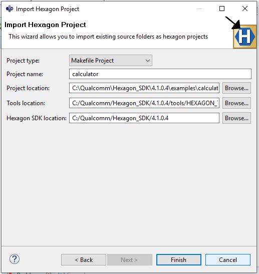

Calculator example
Overview
The calculator example illustrates the following features:
- Using the command line, perform the following steps
- Building
- Simulator testing
- On-target testing
- Using the IDE, perform following steps
- Import project
- Building
- Simulator testing
- Modifying the example
- Project structure
- Customizing the calculator example
Please note that in this document we are discussing procedures for Android targets only. For LE targets refer OS support CPU.
The calculator example consumes an array of integers and returns both the sum and the maximum value of that array.
Using command line
Building
The example comes with a walkthrough script called calculator_walkthrough.py. Please review the generic setup and walkthrough_scripts instructions to learn more about setting up your device and using walkthrough scripts. Walkthrough script automates building, running and signing the device steps mentioned in this section. You can run walkthrough script if you are suck at any step in this section and examine the output of script and/or script itself for better understanding.
Without the walkthrough script, you will need to build both the Android and Hexagon modules. This is accomplished by running the following make commands (assuming your desired Hexagon architecture version is v65):
make android BUILD=Debug
make hexagon BUILD=Debug DSP_ARCH=v65
For more information on the build syntax, please refer to the building reference instructions.
Alternatively, you can build the same Android and Hexagon modules with CMake.
-
For Windows:
cmake_build.cmd hexagon BUILD=Debug cmake_build.cmd android BUILD=Debug -
For Linux:
source cmake_build.bash hexagon BUILD=Debug source cmake_build.bash android BUILD=Debug
To target a different DSP architecture than the default one (V65), simply use the DSP_ARCH option when using the hexagon target. For more information on CMake usage, see the CMake documentation.
Simulator testing
Now that we have built the code, we will discuss how to run the code on the simulator.
The Hexagon Simulator, hexagon-sim, is found in %DEFAULT_HEXAGON_TOOLS_ROOT% \Tools\bin\. For reference documentation on the Hexagon simulator, please refer to hexagon simulator document. For general instructions on the process of running code on the simulator and on device, please refer to the run instructions.
The following command will build the Debug Hexagon variant of the calculator example targeting the v65 instruction set:
make hexagon BUILD=Debug DSP_ARCH=v65
This command will result in creating a binary ELF calculator_q. The simulator command generated by the build system to run calculator_q can be found in the the last section Command line used to invoke simulator of the generated file hexagon_Debug_toolv84_v65\pmu_stats.txt. You can reuse this command directly and/or modify it as desired for running additional simulations.
The main simulator command line options are as follows:
| Simulator option | Description |
|---|---|
--mv* |
Simulate for a particular architecture version of Hexagon. E.g. -mv65. |
--simulated_returnval |
Cause the simulator to return a value to its caller indicating the final execution status of the target application. |
--usefs <path> |
Cause the simulator to search for required files in the directory with the specified path. |
--pmu_statsfile <filename> |
Generate a PMU statistics file with the specified name. See the SysMon Profiler for more information about PMU events. |
--help |
Print available simulator options. |
As an example, here is how the calculator_q ELF file might be run on the simulator:
$DEFAULT_HEXAGON_TOOLS_ROOT/Tools/bin/hexagon-sim -mv65 --simulated_returnval --usefs hexagon_Debug_toolv84_v65 --pmu_statsfile hexagon_Debug_toolv84_v65/pmu_stats.txt hexagon_Debug_toolv84_v65/calculator_q --
This command should generate the following output, which highlights that two tests were executed and completed successfully.
hexagon-sim INFO: The rev_id used in the simulation is 0x00004065 (v65a_512)
- allocate 1024 bytes from ION heap
- creating sequence of numbers from 0 to 255
- compute sum on domain 0
- call calculator_sum on the DSP
- sum = 32640
- call calculator_max on the DSP
=============== DSP: maximum result 255 ==============: HIGH:0x0:55:calculator_imp.c
- max value = 255
- allocate 1024 bytes from ION heap
- creating sequence of numbers from 0 to 255
- compute sum locally
=============== DSP: local sum result 32640 ===============
- find max locally
=============== DSP: local max result 255 ===============
############################################################
Summary Report
############################################################
Pass: 2
Undetermined: 0
Fail: 0
Did not run: 0
On-target testing
Now that we have run the code on the simulator, let's discuss the process of running the code on target.
If you want to run your code on target without using the walkthrough script, please use the following steps:
-
Use ADB as root and remount system read/write
adb root adb wait-for-device adb remount -
Push the HLOS side calculator test executable and supporting calculator stub library onto the device's file system
adb shell mkdir -p /vendor/bin/ adb push android_Debug_aarch64/ship/calculator /vendor/bin/ adb shell chmod 777 /vendor/bin/calculator adb push android_Debug_aarch64/ship/libcalculator.so /vendor/lib64/ -
Push the Hexagon Shared Object to the device's file system
adb shell mkdir -p /vendor/lib/rfsa/dsp/sdk adb push hexagon_Debug_toolv84_v65/ship/libcalculator_skel.so /vendor/lib/rfsa/dsp/sdk/ -
Generate and push a device-specific test signature based on the device's serial number.
Follow the steps listed in the Use signer.py section of the signing documentation.
Note: This step only needs to be done once as the same test signature will enable loading any module.
-
Redirect DSP FARF messages to ADB logcat by creating a farf file. For more information on logcat please refer to the logcat section of messaging.
adb shell echo "0x1f > /vendor/lib/rfsa/dsp/sdk/calculator.farf" -
Launch a new CLI shell to view the DSP's diagnostic messages via logcat
Open a new shell or command window and type:
adb logcat -s adsprpcNOTE: This adsprpc filter captures messages from any of the DSPs (e.g aDSP, cDSP, or sDSP).
-
Execute the example
Please note that following two environment variables are to be passed along with example binary and its arguments
- LD_LIBRARY_PATH : Location of HLOS-side stub library on device.
- ADSP_LIBRARY_PATH (or DSP_LIBRARY_PATH for SM8250 and later devices): Location of DSP libraries and TestSig on device.
For example:
# run example with 1000 array size on CPU adb shell export LD_LIBRARY_PATH=/vendor/lib64/:$LD_LIBRARY_PATH ADSP_LIBRARY_PATH="/vendor/lib/rfsa/dsp/sdk;" calculator 1 3 1000 # run example with 1000 array size on aDSP adb shell export LD_LIBRARY_PATH=/vendor/lib64/:$LD_LIBRARY_PATH ADSP_LIBRARY_PATH="/vendor/lib/rfsa/dsp/sdk;" calculator 0 0 1000 # run example with 1000 array size on sDSP adb shell export LD_LIBRARY_PATH=/vendor/lib64/:$LD_LIBRARY_PATH ADSP_LIBRARY_PATH="/vendor/lib/rfsa/dsp/sdk;" calculator 0 2 1000 # run example with 1000 array size on cDSP adb shell export LD_LIBRARY_PATH=/vendor/lib64/:$LD_LIBRARY_PATH ADSP_LIBRARY_PATH="/vendor/lib/rfsa/dsp/sdk;" calculator 0 3 1000 # run example with 1000 array size on cDSP Unsigned PD adb shell export LD_LIBRARY_PATH=/vendor/lib64/:$LD_LIBRARY_PATH ADSP_LIBRARY_PATH="/vendor/lib/rfsa/dsp/sdk;" calculator 0 3 1000 1NOTE: The above commands will run successfully only on a signed device. The last command executes the example using an unsigned PD, and as such, will work properly even if the TestSig is removed from the DSP search path.
These commands should generate the following output.
Every block starts with --- Run Calculator Example on ... and should end with success.
---- Run Calculator Example Locally on Android ----
adb wait-for-device shell export LD_LIBRARY_PATH="/vendor/lib64/;" /vendor/bin//calculator 1 0 1000
- starting calculator multi domains test
- allocate 4000 bytes from ION heap
- creating sequence of numbers from 0 to 999
- compute sum locally
=============== DSP: local sum result 499500 ===============
- find max locally
=============== DSP: local max result 999 ===============
- success
---- Run Calculator Example on aDSP ----
adb wait-for-device shell export LD_LIBRARY_PATH=/vendor/lib64/:$LD_LIBRARY_PATH ADSP_LIBRARY_PATH="/vendor/lib/rfsa/dsp/sdk;" /vendor/bin//calculator 0 0 1000
- starting calculator multi domains test
- allocate 4000 bytes from ION heap
- creating sequence of numbers from 0 to 999
- compute sum on domain 0
- call calculator_sum on the DSP
- sum = 499500
- call calculator_max on the DSP
- max value = 999
- success
---- Run Calculator Example on sDSP ----
adb wait-for-device shell export LD_LIBRARY_PATH=/vendor/lib64/:$LD_LIBRARY_PATH ADSP_LIBRARY_PATH="/vendor/lib/rfsa/dsp/sdk;" /vendor/bin//calculator 0 2 1000 0
- starting calculator multi domains test
- allocate 4000 bytes from ION heap
- creating sequence of numbers from 0 to 999
- compute sum on domain 2
- call calculator_sum on the DSP
- sum = 499500
- call calculator_max on the DSP
- max value = 999
- success
---- Run Calculator Example on cDSP ----
adb wait-for-device shell export LD_LIBRARY_PATH=/vendor/lib64/:$LD_LIBRARY_PATH ADSP_LIBRARY_PATH="/vendor/lib/rfsa/dsp/sdk;" /vendor/bin//calculator 0 3 1000
- starting calculator multi domains test
- allocate 4000 bytes from ION heap
- creating sequence of numbers from 0 to 999
- compute sum on domain 3
- call calculator_sum on the DSP
- sum = 499500
- call calculator_max on the DSP
- max value = 999
- success
---- Run Calculator Example on cDSP Unsigned PD ----
adb wait-for-device shell export LD_LIBRARY_PATH=/vendor/lib64/:$LD_LIBRARY_PATH ADSP_LIBRARY_PATH="/vendor/lib/rfsa/dsp/sdk;" /vendor/bin//calculator 0 3 1000 1
- starting calculator multi domains test
- allocate 4000 bytes from ION heap
- creating sequence of numbers from 0 to 999
- compute sum on domain 3
- requested signature-free dynamic module offload
- call calculator_sum on the DSP
- sum = 499500
- call calculator_max on the DSP
- max value = 999
- success
Using the IDE
The previous sections described how to build and run the code on simulator or on target using the command line. This section explains how to perform the same steps using the IDE. Before following these instructions, please ensure that you have already created a workspace for your IDE.
Importing project
Once in the IDE, import calculator into your IDE workspace by right-clicking in Project Explorer and selecting Import -> Hexagon C/C++ -> Import Hexagon Project > Next.

In the dialog box, specify the following project properties:
- Project type –
Makefile Project - Project name –
calculator - Project location –
%HEXAGON_SDK_ROOT%\examples\calculator
Click on the Finish button to finish importing the project

Building
To build the imported project, right-click on the project , select properties and then C/C++ Build . Under Builder Settings, enter the build command as make hexagon BUILD=Debug DSP_ARCH=v65 VERBOSE=1 (or enter your target-appropriate build flavor).
While debugging, Debug build flavors are recommended when possible over ReleaseG. When ReleaseG is selected, the compiler will apply optimizations that will result in the disassembly interleaving various C instructions, which makes the code harder to understand while stepping through it.
Click on Apply and Close to apply setting and close the window.
Build the project by right-clicking on the project and select Build Project.
Once building is done, you should see 0 errors, 0 warnings in the console window.
Simulator testing
To run the project on simulator, right-click on the project in Project Explorer and choose Run As -> Run Configuration.
This command displays the Run Configurations dialog box, which enables you to configure the simulator, program arguments, and runtime environment.
In order to debug on the simulator, the user must select the target-specific QuRT image runelf.pbn file for the desired architecture version by specifying the QuRT image path in the C/C++ Application field. This approach is illustrated below and will result in the debugger loading the user ELF, calculator_q, and calling main().
The dialog box displays tabs for configuring the simulator, program arguments, and runtime environment.
(Note that the left-side pane in the dialog box includes a newly-created runtime configuration named calculator Default, which appears under the item Hexagon C/C++ Application.)
To specify the simulator arguments, click on the Simulator tab in the dialog box. For this example please give following options in the miscellaneous flags section. The brief explanations of these flags is given above.
-mv65 --simulated_returnval --usefs hexagon_Debug_toolv84_v65 --pmu_statsfile hexagon_Debug_toolv84_v65/pmu_stats.txt hexagon_Debug_toolv84_v65/calculator_q --
To execute the program, click on the Run button at the bottom of the dialog box.
The dialog box closes and the following output is displayed in the console of the main IDE window.
Modifying the example
Project structure
Now that you are able to build and run the code, let's understand how the code is organized.
The Hexagon SDK's calculator example demonstrates the ability to offload computation on the DSP by calling a function on the HLOS and have it executed on the DSP. This is done via FastRPC in which the complexity of the remote procedure call is made transparent to the caller by only requiring the client to call a library function on the HLOS. That library on the HLOS is referred to as a stub and its corresponding implementation on the DSP is referred to as a skel.
-
MakefileRoot makefile that invokes variant-specific
.minfiles to either build the application processor source code or the Hexagon DSP source code. -
hexagon.min,android.min,UbuntuARM.minContains the make.d directives used to build the application processor and Hexagon DSP source code.
-
inc/calculator.idlIDL interface that defines the calculator API.
This IDL is compiled by the QAIC IDL compiler into the following files:
calculator.h: C/C++ header filecalculator_stub.c: Stub source that needs to be built for the HLOS (Android, Embedded Linux etc...)calculator_skel.c: Skel source that needs to be built for the Hexagon DSP
-
src/calculator_main.cSource for the Android executable that calls the calculator stub on the HLOS side to offload the compute task onto the DSP.
-
src/calculator_test.cSource for the HLOS-side test function.
-
src/calculator_imp.cSource for the Hexagon-side implementation of the calculator interface and is compiled into a shared object.
-
src/calculator_test_main.cSource for simulator executable which calls DSP side compute task on simulator.
Customizing the calculator example
The following steps will show you how you can declare and implement a new method on the DSP and invoke it from the application processor:
-
Add a new method to the calculator interface in inc/calculator.idl
long diff(in sequence<long> vec, rout long long res); -
Add a new implementation of that function in
src/calculator_imp.cint calculator_diff(remote_handle64 h, const int* vec, int vecLen, int64* res) { int ii = 0; *res = vec[0]; for(ii = 1; ii < vecLen; ++ii) { *res = *res - vec[ii]; } FARF(HIGH, "=============== DSP: diff result %lld ===============", *res); return 0; } -
Call the new function from the executable (
src/calculator_main.c).assert(0 == calculator_diff(h, test, num, &result)); -
Both android and hexagon binaries are to be rebuilt once modification is done.